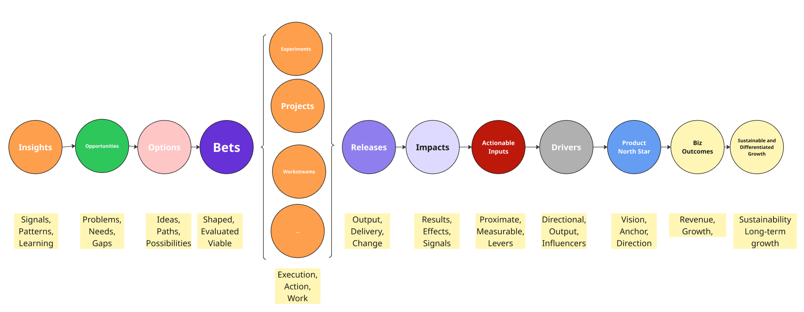

Twelve Practical Moves
Summary
If this guide has a practical takeaway, it is to be much more selective about what you stabilize as an endurant, to treat many other things as flexible perdurants, and to stay closer to anchors than containers.
The Key Move
Start here. The most important decision in this guide is not how to define more wrappers. It is deciding what deserves to be stabilized as a real endurant in your context, and what should instead be treated as a perdurant, something unfolding over time.
There is real power in reframing the real, durable reference points in your environment and being very selective about them. Often those are things like teams, products, actionable inputs, more stable focus areas, changes released, product taxonomies, customer segments, services, systems, and metrics. These are often better candidates for endurants and, in many cases, better anchors as well.
| Candidate | Works well as an endurant or anchor when... | Watch out for... |
|---|---|---|
| Team | it is a real team with durable boundaries, shared context, and stable responsibility | treating temporary staffing patterns or reporting lines as if they were durable operating units |
| Domain | it reflects a real area of responsibility, language, and coordination | drawing boundaries that look clean on slides but do not hold in practice |
| Milestone | it marks a real, consequential point in time that people can observe | using vague phase labels that mean different things to different groups |
| Release | it points to an actual change shipped or exposed to users | confusing plans, intentions, or target dates with the release itself |
| Actionable Input | it is concrete enough to shape decisions and behavior | turning loose signals into pseudo-objects before they are actionable |
| Hypothesis | it is explicit, testable, and tied to evidence or learning | using it as a euphemism for a loosely defined initiative |
| Goal | it is defined well enough to guide choices and tradeoffs | treating broad aspiration statements as if they were operational anchors |
| Service | it maps to something real in the architecture or operating model | using overloaded names that collapse multiple systems into one wrapper |
| Product or Service Taxonomy | it stabilizes shared language for real things people need to navigate | mistaking the classification scheme for the underlying reality |
| Escalation | it marks a meaningful change in attention, risk, or decision rights | turning every mention upward into the same kind of event |
| Risk | it is specific enough to track, discuss, and act on over time | treating generic risk labels as if they carry enough context on their own |
This is also why it helps to think of "flow" much more loosely in knowledge work. What you often have is not a strict cascade or a clean left-to-right timeline, but a tapestry of interlocking elements: some more work-like, some more impact-like, and some oriented around possibility, exploration, or sensemaking.

There is a flow here, but it is better understood as a loose perdurant with many variations than as one neat cascade. Framings like observe-orient-decide-act, learn-build-measure, or diverge-converge can help a little, but the more important question is how your system actually behaves in context.
By contrast, things like bets, initiatives, epics, and similar wrappers often need much more flexibility in definition. You may still name them, because organizations need names, but treat them more like perdurants: forms of unfolding activity, attention, coordination, and decision-making. Keep asking what is really happening over time, and keep coming back to the anchors that stay closest to reality. See Events, States, and Transitions, Practical Modeling Rule, Anchors, and Endurant Fidelity.
Eleven More Moves
- Watch the events and exchanges, not just the wrappers. Pay close attention to interactions, handoffs, side conversations, and the events they throw off. The point is not to standardize every shape of initiative. The point is to notice which events actually matter. See The Left of the Ticket and Why Event Storming Helps.
- Do not force one shape of initiative where many shapes are real. If different efforts genuinely unfold differently, forcing them into one temporal model is an anti-pattern. Make shared events legible only when they carry real significance. See Perdurant Strategy and The Containment Problem.
- Think ritual first. Before getting too attached to your object hierarchy or value pyramid, ask what happens when people come together, how they shape the thing around them, and what they need to see to make real decisions. See Context Through Interaction and The Core Insight.
- Design for drill-down, not just roll-up. People may need a high-level view, but the real test is whether they can quickly get into the relevant details and context. Build views that help people move from summary to history, anchors, and the right local reality. See How the Approach Varies by Setting and Multiple Lenses, One System.
- Treat workarounds as data. If people maintain parallel docs, add context in conversations, or keep re-explaining what something "really means," that is not noise. It is evidence that the official representation is too thin. See The Mismatch and Compensation.
- Use containers for coordination, not truth. Containers help organize work, but they become dangerous when people treat them as the primary object of understanding. When you need truth, go to anchors. See Why It Matters and Rule of Thumb.
- Watch out for summary containers. A green initiative, a portfolio epic, or a high-level OKR can compress multiple incompatible realities. If the upper layer is not real enough to guide action, flatten to anchors instead of stacking more wrappers. See Summary Containers and Anchors.
- Assume scale is guilty until proven innocent. A local model does not automatically become a portfolio model just because you moved up a layer. Test whether something is truly fractal or whether you are just manufacturing a containment hierarchy. See The Scaling Assumption, Some Things Are More Fractal, and Scale of the Local.
- Standardize interfaces and signals before you standardize everything else. Shared milestones, decision points, handoffs, and input metrics often travel better than one rigid workflow or one universal taxonomy. See What To Standardize and Endurant Fidelity.
- Read the organizational context before prescribing the model. Look at coupling, the balance between legibility and
métis, and the underlying factors shaping both before you standardize a workflow, taxonomy, or operating cadence. See The Cycle, At a Glance, and Coupling Reality vs. Coupling Abstraction. - Use AI to translate and surface, not to finalize meaning. AI is strongest when it helps people compare views, navigate ambiguity, and surface patterns. It is weakest when it makes weak abstractions feel settled and complete. See Translation Layers, Messy Work and Exceptions, and The Series Lens.
Try This Now
- Write down three things in your organization that deserve a more stable name because they are real anchors.
- Then write down two things your organization treats like stable objects that would be better understood as unfolding activity.
- Ask: if you had to redesign one status view tomorrow, which anchors would you bring closer to the surface first?
Keep Reading
Glossary